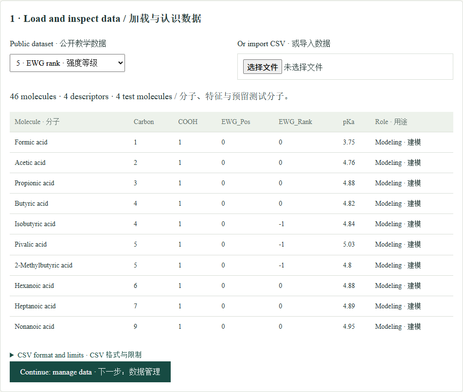
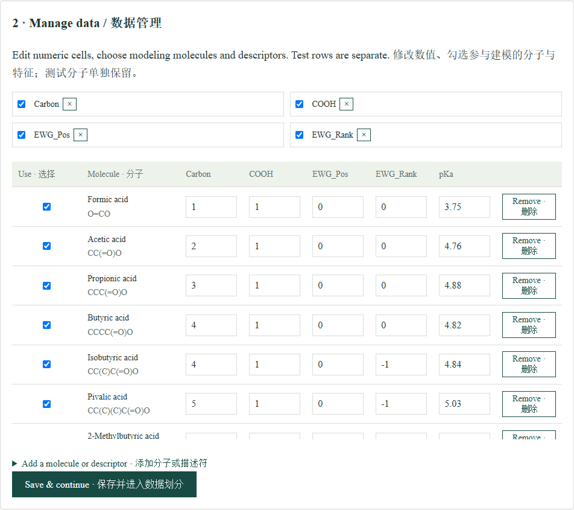
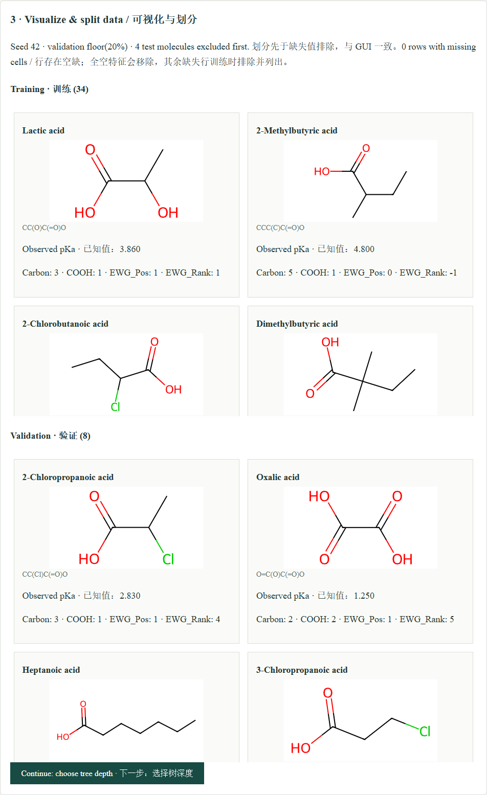
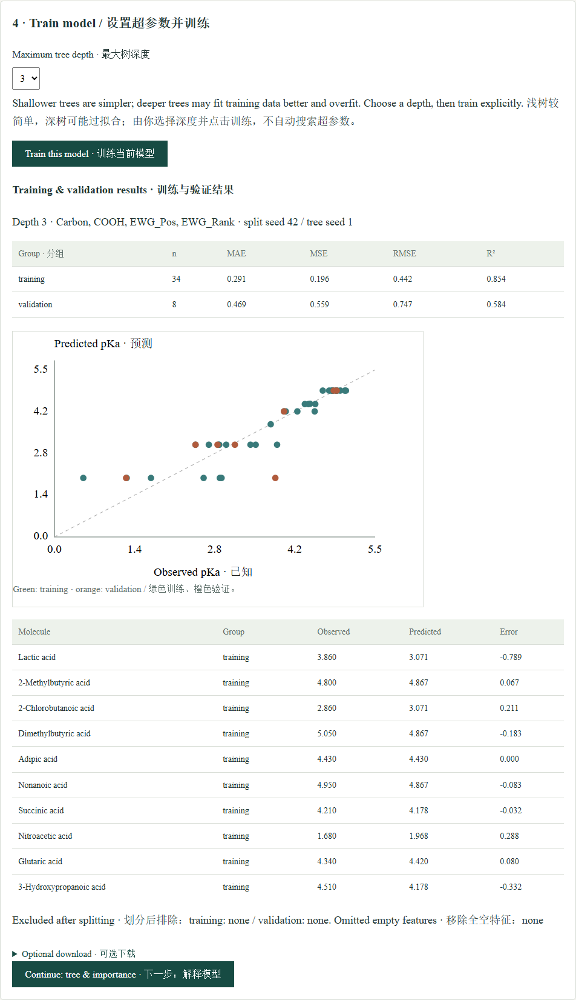
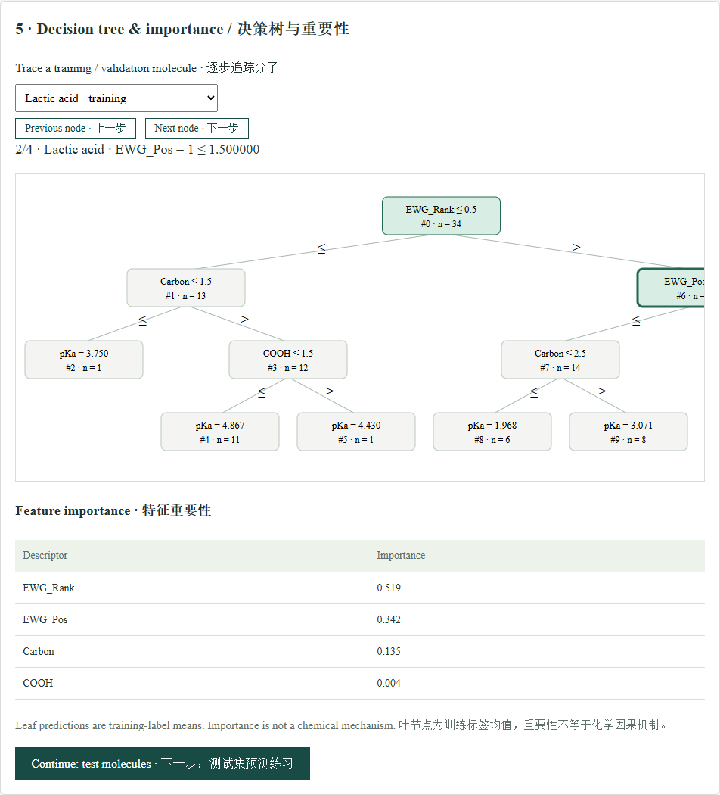
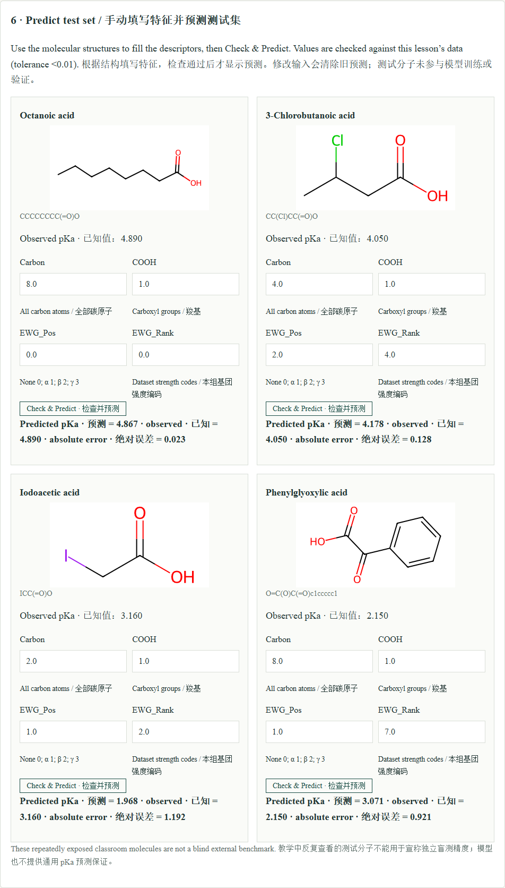

pKa-ML Education · Classroom guide
Follow the original desktop sequence: data, management, splitting, manual training, interpretation, then test-molecule exercises. Core learning stays in the browser.
Screenshots use public teaching data or synthetic examples, without user accounts, task tokens or private research data. Select an image to enlarge it.
1. Load and inspect the dataset
Choose one of five public modules. Inspect the visible descriptor table and reserved test molecules before continuing. Alternatively import a CSV with Molecule Name, SMILES, numeric descriptors and pKa; IsTest is optional.
Different modules may contain different molecules as well as different descriptors. Do not treat every comparison as a controlled single-variable experiment.

2. Manage molecules and features
Edit numeric cells, select modeling rows and descriptors, or add/remove a molecule or descriptor. Test molecules remain outside the modeling pool. Save & Continue confirms this lesson.
Web limits: 100 molecules, 16 numeric descriptor columns, 128 KiB per lesson. Blank cells are allowed; missing-value exclusions are reported after splitting.

3. Inspect the split and structures
The seed-42 split reserves floor(20%) of the selected modeling rows for validation (at least one), before complete-case exclusion. Reserved test molecules are removed first.
Inspect the structure cards, pKa labels and descriptors in each group. All-empty selected features are removed; remaining missing training/validation rows are excluded and listed in the report. Custom SMILES without a bundled picture appear as text.

4. Choose hyperparameters and train
Choose maximum depth 1–6 (default 3), then press Train. This fits one DecisionTreeRegressor with seed 1; it does not sweep depths automatically.
When the server finishes, inspect training/validation MAE, MSE, RMSE, R², parity plot and prediction table. Test-set predictions are not shown here. Change depth and explicitly retrain to explore complexity; repeatedly tuning on validation does not establish unbiased accuracy.

5. Interpret the tree
Select a training or validation molecule. Use Previous/Next node to follow its threshold decisions in the graphical tree. Wide trees can be scrolled horizontally.
A leaf predicts the mean training label in that leaf. Feature importance describes this fitted tree, not a chemical causal mechanism.

6. Fill descriptors, check, then predict
Test descriptor inputs start blank. Read each molecular structure, enter descriptors, and press Check & Predict. Values must agree with the lesson reference within 0.01; incorrect fields are highlighted before any prediction is revealed.
When all inputs pass, the browser applies the trained tree to the entered values and shows predicted pKa, observed pKa and absolute error. Editing an input clears the old prediction. A missing reference is explicitly marked as unverifiable.
Editing data or selected features invalidates the old model. Return through splitting and training. Downloads are optional; the complete learning workflow is visible online.

Troubleshooting
Sign in with an approved account. For a new account, register and verify your email; the owner must approve the application before computation is enabled.
All tools share per-account limits: one running task, two queued tasks and ten submissions per day. Results expire after 72 hours. Save results you need to keep.
If training fails, inspect the status and excluded cells. At least two complete training rows must remain. This is a teaching model, with no automatic SMILES-to-descriptor conversion or universal pKa accuracy guarantee.